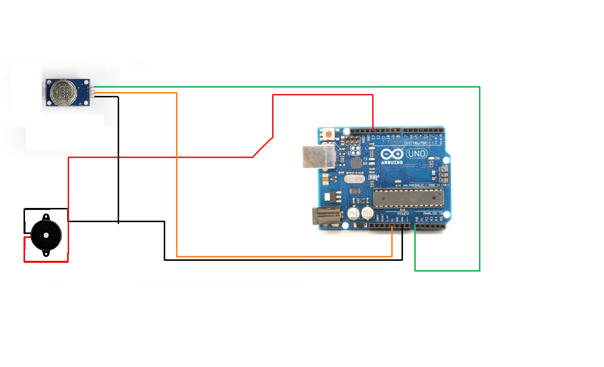

A gas leakage detector is a safety system that identifies dangerous gas levels in the environment and alerts users through an alarm. This project focuses on building a simple gas leakage detector using the MQ-series gas sensor and Arduino Uno.
🛠 How It Works
The MQ-2 or MQ-3 gas sensor detects combustible gases like methane, LPG, or smoke. It gives an analog voltage based on gas levels. The Arduino reads this value and if it goes above a threshold, it activates a buzzer.
📦 Components Required
- Arduino Uno
- MQ-2 or MQ-3 Gas Sensor
- Active Buzzer
- 10kΩ and 220Ω Resistors
- Breadboard & Jumper Wires
- USB Cable
⚡ Circuit Diagram
💻 Arduino Code
Paste the following code into your Arduino IDE:
const int gasSensorPin = A0; // Gas sensor to analog pin
const int buzzerPin = 13; // Buzzer to digital pin
int threshold = 300; // Adjust threshold for sensitivity
void setup() {
pinMode(buzzerPin, OUTPUT);
Serial.begin(9600); // Start Serial Monitor
}
void loop() {
int gasValue = analogRead(gasSensorPin);
Serial.println(gasValue); // Print gas level
if (gasValue > threshold) {
digitalWrite(buzzerPin, HIGH); // Turn on buzzer
} else {
digitalWrite(buzzerPin, LOW); // Turn off buzzer
}
delay(100);
}
⚙ Working Principle
The MQ sensor's resistance changes in the presence of gas, altering its voltage output. The Arduino checks this output continuously. If it exceeds the defined safe level, a buzzer is activated to alert the user.
📘 Features
- Low-cost and beginner-friendly
- Live gas monitoring via Serial Monitor
- Customizable threshold level
- Expandable to include LCD/IoT
🚀 Applications
- Kitchen safety systems
- Gas leak detection in industries
- IoT-connected smart alarms
- Fire/smoke detection systems
📌 Tips & Safety Notes
- Calibrate the sensor before real usage
- Place sensor near gas sources for best accuracy
- Do not expose sensor to flames
- Test in a ventilated area
📎 References & Resources
✅ Conclusion
This project is a great starting point to explore safety automation with Arduino. With a few components, you can build a real-world safety device. Consider expanding it with IoT to send SMS or email alerts remotely.
← Go Back